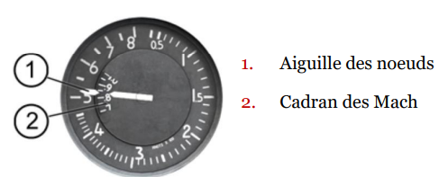
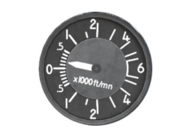
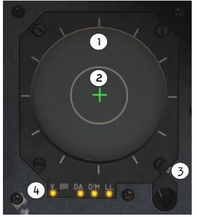
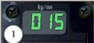
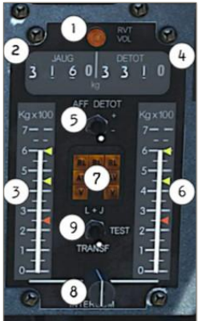
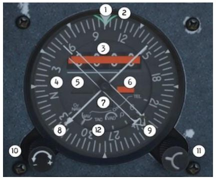
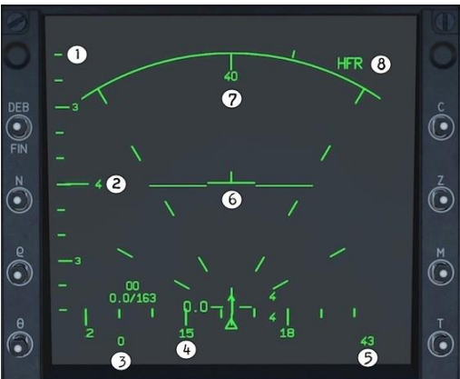
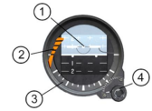
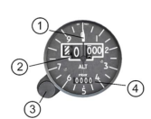

L'anémomètre e affiche la vitesse de l'avion en noeuds et en mach. L'aiguille tourne autour du cadran jusqu'à 800 noeuds pendant que le cadran de Mach tourne sous l'aiguille des noeuds pour afficher le Mach.
Présentation du cockpit
Sur cette page vous trouverez chaque bouton de disponible sur le mirage 2000 ainsi que tout l'avionique avec leurs explications ce qui vous permettera de comprendre le fonctionnement de cet avion. Toutes les informations sont issues du manuel de vol du Mirage 2000-c par RAZBAM.
Le tableau de bord :

1 - ANÉMOMÈTRE:
2 - SÉLECTEUR D'ALTITUDE DU PILOTE AUTOMATIQUE:
Permet de mettre une altitude que le pilote automatique suivera lorsqu'il est enclenché. Cette altitude est en ft. Le 7 représente l'altitude en niveau de vol.

3 - VARIOMÈTRE:
Affiche la vitesse verticale en pieds par minute.

4 - COMMANDES ET VOYANTS DU PILOTE AUTOMATIQUE:
Le pilote automatique est géré par un sélecteur de mode, un sélecteur d'altitude (ALT SEL) et trois commandes sur le manche: le bouton de débrayage PA, la détente de surpassement / veille PA et le chapeau chinois des compensateurs.

- 1 - Bouton de test : Allume les voyants ;
- 2- Bouton d'activation PA : Active le pilote automatique ;
- 3- Bouton de maintien d'altitude : Le PA trim l'avion pour garder la même altitude ;
- 4 - Bouton de capture d'altitude : Le PA fait monter ou descendre l'avion en fonction de l'altitude rentrée dans le sélecteur d'altitude ;
- 5- Non utilisé :
- 6 - Bouton de mode approche ILS : Le PA procède à l'approche et à l'atterrissage de l'avion.
5 - INTERRUPTEUR ANTI VRILLE DES COMMANDES DE VOL:
- Norm: Commandes de vol électriques en fonction ;
- Vrille: Le pilote a pleine autorité sur les commandes de vol électriques en lacet et en roulis et le limiteur d'incidence est désactivé. À n'utiliser qu'en cas d'urgence durant une vrille à plat.
6 - AFFICHEUR DES FRÉQUENCES RADIO:
Affiche la fréquence V/UHF sélectionnée de la radio verte en haut et la fréquence UHF de la radio rouge en bas.

7 - VOYANT PRINCIPAL D'ALERTE/AVERTISSEMENT:
Voyan bicolore indiaquant une alerte ou un avertissement:
• Voyant ambre: indique un problème ne mettant pas en cause la sécurité de l'avion dans l'immédiat
• Voyant rouge: indique un danger requérant une action immédiate. Lasécurité de l'avion est compromise.
8 - INDICATEUR D'INCIDENCE:
Indique l'incidence actuelle de l'appareil en degrés.

- 1. Indicateur d'angle de roulis ;
- 2. Drapeau “Off” ;
- 3. Symbole avion (fixe) ;
- 4. Voyant de balise ;
- 5. Bille de dérapage ;
- 6. Aiguille d'écart de course ;
- 7. Aiguille d'écart de plan de descente ;
- 8. Bouton N/P (P verrouille l'horizon artificiel pôle sud vers le pilote afin qu'il n'affiche que du noir et ne trouble pas le pilote par de fausses indications) ;
9 - SUPPORT DE VTH:
Supporte la VTH et ses commandes.

- 1. INTERRUPTEUR D'ALLÈGEMENT. L'interrupteur d'allègement supprime certains symboles de la VTH pour une meilleure visibilité vers l'avant. Par défaut, il est en position Off
- 2. ÉCHELLE D'ENVERGURE CIBLE. Utilisé en combat rapproché pour définir l'envergure de la cible. Les réglages vont de 7 à 40 mètres. Plus d'informations dans AFFICHAGE VTH.
- 3. BOUTON EFF. Le bouton EFF est utilisé pour couper temporairement la VTH. Ne fonctionne que pendant l'appui et remet la VTH en vue normale une fois relâché. NON FONCTIONNEL
- 4. SÉLECTEUR DE RÉTICULE CANON. NOT FUNCTIONAL ;
- 5. COMMANDE DE LUMINOSITÉ. Utilisé pour augmenter ou diminuer la luminosité de la VTH.
- 6. BOUTON D'ALIMENTATION. Alimente la VTH. Il a deux positions: fonctionnement normal (premier click droit) et mode test (accessible après un second click droit).
- 7. RÉTICULE FIXE DE SECOURS. Utilisé uniquement quand le calculateur de tir est en panne.
- 8. AJUSTEMENT DE LA VISÉE. Utilisé pour régler manuellement la déflexion en accord avec les tables balistiques pour la distance souhaitée ;
- 9. SÉLECTEUR D'ALTIMÈTRE ET 10 COMMUTATEUR ALTIMÈTRE RADAR. Par défaut, seule l'altitude barométrique, MSL, est affichée, si vous avez besoin de l'AGL, vous devez activer l'altimètre radar: Cliquez une fois sur l'interrupteur d'altimètre radar. Le clic suivant activera l'autotest. Cliquez sur le sélecteur d'altimètre. Par défaut, il est en position ZB (altitude barométrique). Cliquez une fois pour le mettre en position H (altimètre radar). Les altitudes barométrique et radar sont visibles sur la VTH. La position SELH affiche la sélection d'altitude minimale sur la VTH, permettant ainsi son réglage par le pilote
10 - G MÈTRE:
Indique l'accélération verticale actuelle subie par l'avion en G.
11 - RÉCEPTEUR D'ALERTE RADAR:
Affiche tous les émetteurs radar autour de l'avion.
- 1. ZONE DE MENACE FAIBLE. Toutes les menaces affichées à l'intérieur de cette zone représentent un danger potentiel pour l'avion. Les signaux radar affichés ici sont reconnus comme étant en mode de recherche. Vous devez estimer s'ils sont dangereux ou pas.
- 2. ZONE DE MENACE CRITIQUE. Toutes les menaces affichées à l'intérieur de cette zone représentent un danger immédiat pour la sécurité de l'avion parce qu'ils vous verrouillent ou parce que le radar émet des signaux de guidage, ce qui est interprété comme un lancement de missile. Si un radar de missile est détecté, il sera affiché à l'intérieur de cette zone, même s'il ne se dirige pas vers votre avion.
- 3. BOUTON DE LUMINOSITÉ. Contrôle la luminosité de l'écran
- 4. VOYANTS D'ÉTAT DES SYSTÈMES. Indique si le système associé est alimenté ou actif. Voir ci-dessous pour plus de détails
- V: Allumé, indique que le système de brouillage radar est alimenté et prêt à fonctionner.
- BR: Allumé, indique que le brouilleur radar fonctionne (il émet des signaux de brouillage). BR = Brouillage.
- DA: Allumé, indique que le RWR est sous tension et qu'il fonctionne.
- D2M: Allumé, indique que le système d'alerte de missile fonctionne. Clignotant, indique que le système est alimenté mais pas prêt à fonctionner (précchauffage).
- LL: Allumé, indique que le système de largage de paillettes/leurres thermiques est alimenté et prêt à fonctionner.
12 - VOYANT DE POSTCOMBUSTION:
Indique l'utilisation de la postcombustion.
13 - VOYANT DE DÉMARRAGE MOTEUR:
Indique le moteur est en cours de démarrage.
14 - INSTRUMENTS MOTEUR:
Indiquent le régime et la température moteur.

- 1. AIGUILLE DE RÉGIME MOTEUR (N), affiche le régime en % si le moteur est allumé.
- 2. AFFICHAGE DU RÉGIME (N), même information mais en valeurs numériques.
- 3. INDICATEUR DE TEMPÉRATURE T7, en centaines de degrés Celsius.
15 - DÉBITMÈTRE CARBURANT:
Indique le débit instantané de carburant en Kg/min

16 - SÉLECTEUR DE BINGO CARBURANT:
Ajuste la valeur de l'alerte Bingo

- 1. DÉBIT: Affiche la consommation de carburant du moteur en kilogrammes par minute (Kg / min).
- 2. SÉLECTEUR DE BINGO CARBURANT: Les molettes sont utilisées pour régler le Bingo carburant qui déclenchera le voyant du panneau d'avertissement.
17 - VOYANTS INCENDIE MOTEUR:
Deux voyants indiquent une surchauffe pouvant être causée par un incendie. Ils correspondent respectivement à la partie centrale du moteur et à la tuyère.
18 - PANNEAU DE COMMANDE CARBURANT:
Indique la quantité actuelle de carburant en kg et commande la vanne d'alimentation croisée des réservoirs
- 1. VOYANT DE RAVITAILLEMENT EN VOL: Allumé par l'interrupteur de ravitaillement en vol.
- 2. COMPTEUR DE CARBURANT: Affiche la quantité totale de carburant interne. Mesuré par des capteurs placés dans les réservoirs internes (exceptés ceux des ailes, ou elle est estimée par calcul d'après la quantité fuselage et un coefficient multiplicateur).
- 3. NIVEAU CARBURANT NOURRICE GAUCHE: Affiche la quantité dans la nourrice gauche.
- 4. COMPTEUR DÉ-TOTALISATEUR DE CARBURANT: Affiche le total disponible dans les réservoirs (internes et externes) de l'avion. Ce nombre est obtenu par soustraction de la consommation de carburant par rapport au total au démarrage (valeur réglée avant le démarrage du moteur). Dans DCS, le total de départ est automatiquement fixé et remis à zéro en cas de ravitaillement. Aucune action pilote n'est requise
- 5. INTERRUPTEUR D'AFFICHAGE DU DETOT: Définit les informations du compteur DETOT. NON FONCTIONNEL
- 6. NIVEAU CARBURANT NOURRICE DROITE:Affiche la quantité dans la nourrice droite.
- 7. VOYANTS D'ALERTE CARBURANT: Indiquent quand un réservoir est vide (voir page suivante).
- 8. COMMANDE DE TRANSFERT DE CARBURANT: Permet le transfert de carburant pour maintenir l'équilibre NON FONCTIONNEL
- 9. INTERRUPTEUR DE TEST DE TRANSFERT: Teste le circuit de transfert. NON FONCTIONNEL
19 - IDN:
Indicateur de Navigation (HSI).
- 1. POINTEUR DE CAP ACTUEL. Le cap actuel de l'avion est lu devant le pointeur
- 2. REPÈRE DE CAP SÉLECTIONNÉ POUR LE PILOTE AUTOMATIQUE. Appelé aussi Bug de pilote automatique. Indique le cap utilisé par le pilote automatique. Lorsque la valeur est modifiée, il se déplace le long de l'échelle de cap. Une fois réglé sur la valeur désirée et pilote automatique engagé, l'avion vire jusqu'à ce que le repère et le curseur de cap soient alignés sur la même valeur. Cette valeur peut être modifiée par la commande de compensation sur le manche (lorsque le pilote automatique est engagé).
- 3. FENÊTRE DE DISTANCE (DME). Affiche la distance en nautiques jusqu'à la référence sélectionnée (source). Voir le tableau ci-dessous. Notez que le chiffre le plus à droite est un dixième de mile. Le drapeau DME s'affiche dans cette fenêtre si aucune donnée n'est disponible. L'affichage de la distance sert également pour régler les données VAD.
- 4. ROSE DES VENTS. L'échelle va de 001 à 360 avec de longs repères tous les 10 degrés et des plus courts tous les 5 degrés. Les valeurs numériques (en dizaines de degrés) sont tous les 30 degrés (par exemple 18 pour 180°)
- 5. FENÊTRE DU DRAPEAU DE VOR. Le relèvement indiqué par la flèche fine (VOR) est soit invalide, soit absent (aucun signal ou défaillance du système). N'en tenez pas compte.
- 6. FENÊTRE DU DRAPEAU DE RELÈVEMENT. Le relèvement indiqué par la flèche large/double est soit invalide, soit manquant (pas de signal ou défaillance du système). N'en tenez pas compte.
- 7. FENÊTRE DU DRAPEAU DE CAP. L'information de cap n'est pas disponible (panne ou pas de signal). Ne tenez pas compte des informations de cap affichées et utilisez un indicateur différent (VTH, ADI ou compas de secours).
- 8. FLÈCHE FINE. Indique la direction d'une référence sélectionnée (source) - qui, dans la plupart des cas, est une station VOR. La seule autre utilisation est le mode TEL, qui n'est pas modélisé dans DCS.
- 9. FLÈCHE LARGE, OU DOUBLE AIGUILLE. Donne la direction d'une référence sélectionnée.
- 10. BOUTON DE RÉGLAGE DES DONNÉES. En mode VAD, sert à régler une position spécifique à partir d'une balise au sol (relèvement et distance).
- 11. SÉLECTEUR DE MODE IDN. Permet de sélectionner la source de navigation. En tournant le bouton, l'indicateur de source de navigation se déplace sur la position désirée.
- 12. INDICATION DU MODE SÉLECTIONNÉ. Le petit demi-cercle sous chaque option indique le mode IDN sélectionné.
20 - VTB:
Visualisation tête basse, écran Radar. (HDD)
- 1. ÉLÉVATION DE L'ANTENNE RADAR. Indique l'angle d'élévation de l'antenne vers le haut ouvers le bas. Chaque petite barre représente 10°.
- 2. COUVERTURE DE BALAYAGE VERTICAL DU RADAR (BARRES). Indique les réglages du nombre de barres choisis sur le SÉLECTEUR DE BARRES (1, 2 ou 4 lignes). Le repère à gauche du numéro se déplacera vers le haut ou vers le bas le long de l'échelle d'élévation de l'antenne radar, montrant l'angle actuel de l'antenne. notez que lors du réglage une barre, il n'y a pas de numéro, seulement le repère horizontal sur l'échelle d'élévation.
- 3. VITESSE CONVENTIONNELLE. Indique la CAS en nœuds et en Mach en dessous (nonvisible sur cette capture d'écran).
- 4. ÉCHELLE DE CAP. Semblable à celle de la VTH, indique le cap actuel de l'avion. Chaque barre verticale représente 10°, les nombres (12, 15, 18) indiquent le cap (120, 50, 80).
- 5. ALTITUDE BAROMÉTRIQUE. Indique l'altitude barométrique actuelle de l'avion (3 chiffres au format xxx, dans ce cas 043 - 43o0 pieds).
- 6. SYMBOLE ET ASSIETTE DE L'AVION. Le symbole au milieu est statique et représente votre avion, tandis que les deux longues lignes horizontales bougent pour représenter le roulis et le tangage instantané de l'avion.
- 7. DISTANCE DE BALAYAGE RADAR. Indique la portée en nautiques actuellement couverte sur l'écran, réglée par L'INTERRUPTEUR DE PORTÉE RADAR.
- 8. FRÉQUENCE DE RÉPÉTITION DES IMPULSIONS. Affiche le mode de fonctionnement actuel du radar, déterminé par la position du COMMUTATEUR DE MODE RADAR. Options possibles: HFR pour haute fréquence // ENT pour entrelacé // BFR pour basse fréquence
26 - PANNEAUX DE GESTION DE L'ARMEMENT:
Composé de deux panneaux de part et d'autre de la VTB.
- PCA (Poste de Commande Armement): Ce panneau sélectionne les armes et les paramètres de navigation ainsi que les modes d'affichage de la VTH.
- PPA (Poste de Préparation Armement): Ce panneau détermine comment l'armement sélectionné sera utilisé.
- 1. TOP: GUIDAGE EN VITESSE. Mode de navigation spécial utilisé en conjonction avec (TEMPS DÉSIRÉ SUR CIBLE (MODE RD / TD). Reportez-vous à la section correspondante pour plus d'informations.
- 2. POL: MODE POLICE. Le système vous guide vers une cible verrouillée à des fins d'identification. Aucune arme n'est disponible dans ce mode, même si la sécurité armement est levée.
- 1. SÉLECTEUR DE PYLÔNE MISSILE. Cet interrupteur à trois positions sert à contrôler l'ordre de lancement des missiles super 530D.
- 2. PRÉPARATION SUPER 530D. Ce bouton active ou désactive la préparation de tous les missiles super 530D (test intégré) et ainsi permet ou interdit leur utilisation. La préparation est déclenchée soit par la mise sous tension de l'avion, soit en cliquant sur le bouton, soit en sélectionnant le mode lié au missile sur le PCA.
- 3. SÉLECTEUR DE TIR DE MISSILE. Ce bouton n'est pas utilisé dans le M-2000c
- 4. PRÉPARATION MAGIC II. Ce bouton active ou désactive la préparation de tous les missiles magic II (test intégré & refroidissement du capteur) et ainsi permet ou interdit leur utilisation.
- 5. VOYANTS TEST/PRÉSENCE
- 6. SÉLECTEUR DE DÉTONATEUR DE BOMBES. Interrupteur à trois positions utilisé pour armer les bombes emportées en sélectionnant le détonateur à activer.
- 7. SÉLECTEUR DU NOMBRE DE BOMBES À LARGUER. Utilisé pour augmenter ou diminuer la quantité de bombes à larguer. Un clic gauche augmente la valeur et un clic droit la diminue.
- 8. SÉLECTEUR D'INTERVALLE DE LARGAGE DES BOMBES. Ce commutateur est utilisé pour augmenter ou diminuer la distance entre chaque largage de bombe. Un clic gauche augmente la valeur et un clic droit la diminue. Cette fonction n'est active que lorsque plusieurs bombes sont larguées simultanément.
- 9. AFFICHAGE DE LA QUANTITÉ SÉLECTIONNÉE. L'écran supérieur indique la quantité de bombes à larguer à chaque déclenchement. Les valeurs sont augmentées ou diminuées par paires: 0, 2, 4, 8, 10. Pour le PPA, 0 équivaut à 1.
- 10. AFFICHAGE DE L'INTERVALLE SÉLECTIONNÉ. L'écran inférieur indique l'intervalle entre les largages de chaque bombe en dizaines de mètres, par exemple: 1 = 10 mètres, 40 = 400 mètres, etc.
- 11. SÉLECTEUR DE SALVE. Ce bouton ne s'applique qu'aux armes suivantes: Super 530D, canons DEFA 554 et roquettes. Il permet de sélectionner la manière de tirer les armes à chaque appui sur la détente.
27 - HORIZON ARTIFICIEL DE SECOURS:
N'indique que le tangage et le roulis. Il doit être aligné manuellement avant le vol et doit également être alimenté par l'interrupteur HORIZON SECOURS (66).
- 1. Symbole avion (adjustable).
- 2. Drapeau OFF.
- 3. Indicateur de roulis.
- 4. Bouton de réglage/blocage du symbole avion.
29 - ALTIMÈTRE:
Affiche l'altitude barométrique (MSL) en pieds.
- 1. Aiguille des centaines de pieds
- 2. Tambour des milliers de pieds
- 3. Bouton de réglage barométrique
- 4. Affichage du réglage barométrique (en millibars).
30 - BOUTON DE LARGAGE D'URGENCE:
Largue la totalité des charges externes à l'exception des missiles Magic.
31 - INDICATEURS DE POSITION:
Indique la position actuelle des surfaces de commande des ailes et de la dérive.
50 - POIGNÉE PARACHUTE/CROSSE D'ARRÊT:
Déploie et relâche le parachute de freinage ou abaisse la crosse d'arrêt d'urgence lorsqu'elle est installée.
51 - INTERRUPTEUR DE GAIN DES COMMANDES DE VOL ÉLECTRIQUES:
Gain automatique normal ou gain fixe de secours des commandes de vol électriques. Lorsqu'il est activé, le mode de gain de secours ne peut plus être annulé pour le reste du vol.
52 - POIGNÉE DE LARGAGE DE LA VERRIÈRE:
Déclenche manuellement le cordon explosif inclus dans le plexiglas de la verrière afin de la briser (le même cordon est automatiquement déclenché dans le cadre de la séquence d'éjection lorsque la poignée d'éjection est tirée).
53 - LEVIER DES TRAINS D'ATTERRISSAGE:
Active les trains d'atterrissage.
54 - PANNEAU DES INDICATEURS DE CONFIGURATION:
Indique l'état des aérofreins, trains, crosse / parachute, dirigeabilité roues avant et système antiblocage.

- 1. AF (abbréviation pour Aéro Freins), Voyants des aérofreins. S'allument lorsque qu'ils sont sortis.
- 2. DIRAV (abbréviation pour Dirigeabilité Roue Avant) voyant de signalisation. S'allume lorsque le système DIRAV est engagé. Sachez que la DIRAV se déconnecte automatiquement lorsque la vitesse sol atteint 40 noeuds.
- 3. CROSS (Abbréviation pour Crosse) voyant de signalisation.
- 4. FREIN voyant de signalisation. S'allume lorsque les freins de roue sont activés ou lorsque le frein de parc est serré. (en plus du voyant PARK sur le panneau d'alarme/avertissement).
- 5. SPAD (Système Perfectionné Anti-Dérapant) voyant de signalisation. Il s'allume lorsque l'anti-dérapage est déconnecté ou lorsque son test automatique échoue. Clignote lorsque le train d'atterrissage est en transition.
- 6. TRAIN EN TRANSIT voyant de signalisation.
- 7. TRAIN SORTI ET VERROUILLÉ voyants de signalisation. S'allument quand les trois trains sont sortis et verrouillés.
55 - LEVIER DE SECOURS DE TRAINS D'ATTERRISSAGE:
Abaisse les trains en cas de défaillance du système principal.
56 - MONTRE:
Affiche l'heure ZULU (GMT/UTC).
57 - JAUGE D'OXYGÈNE:
Indique la quantité d'oxygène restante.
58 - INTERRUPTEURS DE MISE SOUS TENSION:
Active les systèmes électriques de l'avion.
59 - PANNEAU D'ALERTES/AVERTISSEMENTS:
Indique des situations d'urgence ou anormales de l'avion. Associé au voyant d'alerte principal.
60 - INTERRUPTEUR QRA:
(Quick Reaction Alert). Active un réseau électrique spécifique pour garder l'avion prêt à démarrer avec un très court préavis, lorsqu'il est en alerte au sol. NON FONCTIONNEL
61 - POIGNÉE DE VERROUILLAGE/DÉVERROUILLAGE DE LA VERRIÈRE:
Verrouille et déverrouille la verrière.
76 - INTERRUPTEUR DE SÉCURITÉ CANONS:
Doit être désengagé pour utiliser les canons.
77 - PANNEAU DE COMMANDE DE LA NACELLE ÉCLAIR:
Commande la nacelle "ÉCLAIR" et affiche le nombre de contre mesures restantes (paillettes ligne du haut, leurres IR ligne du bas).
81 - COMPAS DE SECOURS:
Compas magnétique de réserve non connecté aux autres systèmes de navigation embarqués.
82 - INTERRUPTEUR DE MODES DE COMMANDES DE VOL ÉLECTRIQUES:
Sélectionne le mode de fonctionnement des commandes de vol électriques.
85 - SUPPORT DES JUMELLES DE VISION NOCTURNE:
Support de maintien des jumelles de vision nocturne une fois sorties de leur sac sur le panneau droit.
86 - BOITIER "SPIRALE":
Elément du système ECM / contre-mesures. Voir SECTION 13 pour plus d'informations.
Tableau de bord derrière le manche :

21 - PANNEAU IFF
Information Amis/Ennemies.
22 - SÉLECTEUR DE MANOMÈTRE HYDRAULIQUE
Sélectionne le circuit un ou deux pour affichage au manomètre hydraulique. NON FONCTIONNEL
23 - MANOMÉTRE DE PRESSION CABINE:
Indique la pression cabine en bars
24 - MANOMÈTRE HYDRAULIQUE:
Indique la pression du circuit 1 ou 2 en bars S (Servitudes) et FS (Frein Secours) en fonction de la position de l'interrupteur #22.
25 - LEVIER DE RÉGLAGE DU PALONIER:
Règle la hauteur des pédales du palonnier.
Panneau de gauche :

32 - COMMUNICATION RADIOS:
Deux radios, principale (VHF/UHF) et auxiliaire (UHF). La radio principale est identifiable à son sélecteur manuel de fréquences.

- 1. SÉLECTEUR ÉMETTEUR/RÉCEPTEUR UHF. Non utilisé, toujours réglé à 5W, même dans la réalité.
- 2. INTERRUPTEUR SIL UHF. Active ou désactive la fonction de suppression automatique du bruit.
- 3. SÉLECTEUR DE TEST UHF. NON FONCTIONNEL
- 4. SÉLECTEUR DE CANAL PRÉRÉGLÉ UHF. Règle le canal de fréquence préréglé désiré. Passer au canal suivant par un clic droit, au précédent par un gauche.
- 5. INDICATEUR DE CANAL UHF. Affiche la fréquence préréglée sélectionnée. 20* préréglages sont disponibles.
- 6. SÉLECTEUR DE MODE DE FONCTIONNEMENT UHF. Détermine le mode de fonctionnement radio AR, M, F1 ou H.
- 7. VOYANT DE RÉCEPTION UHF CHIFFRÉE. NON FONCTIONNEL
- 8. BOUTON DE TEST UHF. Lors de l'appui sur cette touche, si la radio UHF fonctionne, on doit entendre les parasites radio.
- 9. SÉLECTEUR DE FONCTION V/UHF. Ce sélecteur de fonction à sept positions détermine le mode de fonctionnement de la radio.
- 10. BOUTON MEM/CLR. Affiche le contenu de la mémoire tampon (peut être un canal ou une fréquence).
- 11. ÉCRAN DE LA RADIO V/UHF. Affichage numérique indiquant le canal ou la fréquence préréglée actuellement sélectionnée.
- 12. BOUTON XFR / VAL. XFR (TRANSFERT) permet de revenir au canal ou à la fréquence utilisé précédemment.
- 13. SÉLECTEUR DE CANAL V/UHF PRÉSELECTIONNÉ. Règle le canal V/UHF présélectionné souhaité.
- 14. BOUTON CONFIGURATION. Remplace les chiffres sur le clavier par des options.
- 15. CLAVIER V/UHF. Permet de choisir un canal préréglé (à la place du bouton de sélection, deux chiffres acceptés), de saisir manuellement une fréquence (cinq chiffres acceptés) ou de modifier différents paramètres après avoir appuyé sur le bouton CONF.
33 - INTERRUPTEUR ANTIBLOCAGE:
Active/désactive le système antiblocage des roues.
34 - PANNEAU DE COMMANDE RADAR:
Commande et configure les paramètres opérationnels du Radar.
35 - BOUTON D'ARRÊT MOTEUR:
Permet à la manette des gaz d'être reculée de la position ralenti à la position stop.
36 - PANNEAU DE COMMANDE AUDIO:
Commande le volume des composants suivants: Communication radios, TACAN, VOR/ILS, balises, tonalité de recherche et de verrouillage des Magic.
37 - PANNEAU DES COMPENSATEURS:
Commandes de secours des compensateurs de tangage et de roulis (surpasse les commandes du manche) et de lacet.
38 - SYSTÈME DE LUBRIFICATION DE SECOURS:
Active/désactive le système de lubrification de secours.
39 - INTERRUPTEUR CALC:
Active le calculateur de secours en cas de panne du principal. C'est un système de "retour à la maison". L'interrupteur CALC est en relation avec le calculateur moteur.
40 - INTERRUPTEUR DE VIDANGE CARBURANT:
Vidange du carburant des réservoirs externes (si montés).
41 - PANNEAU DE TEST DES CDVE ET DU PILOTE AUTOMATIQUE:
Permet de tester les commandes électriques et le pilote automatique. Doit être effectué après le démarrage moteur et avant le vol.
42 - CANAL DE SECOURS DES CDVE (CDVE 5):
Le canal de secours des commandes électriques est un système de dernier recours en cas de défaillance totale des commandes électriques. L'avion est mis en condition de "retour au bercail". Ne pas utiliser pour le vol normal.
43 - INTERRUPTEUR DE COUPURE DE POSTCOMBUSTION:
Désactive la postcombustion en cas de panne de la manette des gaz.
44 - INTERRUPTEUR D'ÉMISSION RADAR:
Utilisé par le personnel d'entretien seulement. Il surpasse le système de sécurité empêchant le radar d'émettre au sol.
45 - INTERRUPTEUR DU MAGNÉTOPHONE:
Se passe d'explications. Oui, le M-2000C utilise de vieilles bandes magnétiques.
46 - INTERRUPTEUR DE REDÉMARRAGE EN VOL:
Se passe aussi d'explications.
47 - MANETTE DE SECOURS
Seconde manette des gaz, utilisée en secours.
48 - PANNEAU DES SURFACES DE COMMANDES:
Commande les surfaces de controles automatiques.
49 - PANNEAUX DES FEUX EXTÉRIEURS:
Ensemble d'interrupteurs pour les feux de navigation, les feux stroboscopiques anti collision et les feux de formation.
78 - INTERRUPTEUR DE RAVITAILLEMENT EN VOL:
Ouvre la valve et commande l'éclairage durant le ravitaillement en vol.
80 - PANNEAU DE COMMANDE OXYGÈNE:
Commande le débit et la dilution de l'oxygène utilisé. NON FONCTIONNEL
83 - INTERRUPTEUR DES PHARES D'ATTERRISSAGE ET DE POLICE:
Utilisé pour allumer les phares d'atterrissage et de police.
Panneau de droite :

62 - INTERRUPTEUR DE POMPE HYDRAULIQUE DE SECOURS:
Active/désactive la pompe hydraulique de secours. Trois positions: Off – Auto – Forcée On (instable).
63 - INTERRUPTEUR D'ALERTE AUDIO:
Active/désactive les alertes audio de l'avion. Il n'a pas d'effets sur celles des trains, de l'incidence et des missiles.
64 - INTERRUPTEUR DE DÉGIVRAGE DES SONDES:
Active et désactive le dégivrage du Pitot, des sondes statiques et d'incidence.
65 - PANNEAU TACAN:
Commande la radio TACAN
66 - INTERRUPTEUR D'HORIZON ARTIFICIEL DE SECOURS (GCS):
Active l'horizon artificiel et/ou le gyro compas de secours pour fournir des données au système de navigation en cas de panne de l'UNI.
67 - PANNEAU DE COMMANDE DE CLIMATISATION:
Commande le système de climatisation du cockpit et des instruments.
68 - DISJONCTEURS:
Disjoncteurs électriques.
69 - PANNEAU DE DÉMARRAGE MOTEUR:
Commande des pompes d'alimentation moteur et du système de démarrage. Comporte également le robinet coupefeu.
70 - PANNEAU DE L'ÉCLAIRAGE INTÉRIEUR:
Commande le système d'éclairage intérieur.
71 - PANNEAU UNI PSM/MIP:
Commande le fonctionnement de l'UNI. Comporte également le connecteur de cartouche de données de navigation.
72 - PANNEAU VOR/ILS:
Commande la radio VOR/ILS.
73 - PANNEAU DE GUERRE ÉLECTRONIQUE:
Commande le RWR, brouilleur, détecteur de départ missile et le fonctionnement des paillettes et leurres IR.
74 - PANNEAU RADAR IFF:
Commande le système Radar d'interrogation IFF.
75 - PANNEAU PCN:
Affiche et permet d'entrer les données du système UNI.
79 - RÉGLAGE DE LA HAUTEUR DU SIÈGE:
Utilisé pour monter ou baisser le siège.
84 - FREIN DE PARC:
Active/désactive le frein de parc au sol.
87 - SAC DES JUMELLES DE VISION NOCTURNE:
Housse de rangement des jumelles de vision nocturne lorsqu'elles ne sont pas utilisées. Doit être installé par le chef d'équipe.
88 - INTERRUPTEUR DE FILTRAGE DE LA LUMIÈRE POUR LES JUMELLES DE VISION NOCTURNE:
Active ou désactive le filtre rendant les panneaux d'instruments lisibles avec les JVN.